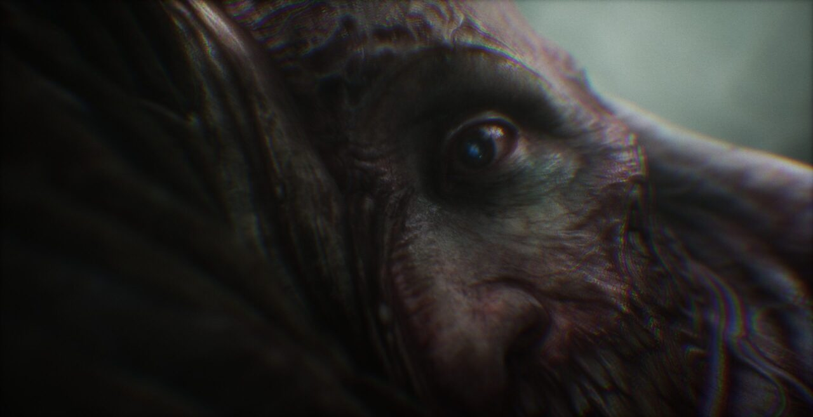

Scorn

ENTRE EM UM LABIRINTO HIPNOTIZANTE
Scorn é um jogo de aventura de terror em primeira pessoa ambientado em um universo de pesadelo de formas estranhas e tapeçaria sombria.
Scorn é um jogo de terror em primeira pessoa ambientado em um universo tenebroso de formas estranhas e trama sombria. O design gira em torno do conceito de "ser lançado em um mundo". Isolado e perdido neste mundo onírico, você vai explorar diferentes regiões interconectadas de maneira não linear. O próprio ambiente perturbador é um personagem. Cada local contém seu próprio tema (história), com quebra-cabeças e personagens que compõem um mundo coeso. Ao longo do jogo, você descobre novas áreas, adquire diferentes habilidades e armas, obtém itens variados e tenta entender as paisagens à sua frente.
Enredo
A história se passa entre dois protagonistas silenciosos: o primeiro desperta e tenta atravessar um terreno baldio em direção a uma torre vista à distância antes de cair em uma enorme fenda, antes que o segundo emerja de uma estrutura semelhante a um ovo. O jogador escapa de uma enorme câmara de ovos antes de entrar em um centro de transporte que foi infestado de entidades parasitas. Essas entidades se uniram em rede para impedir o funcionamento da maioria dos mecanismos. Durante esse tempo, o protagonista é atacado e aparentemente infestado por um parasita, que permite ao jogador usar várias máquinas e armas, mas fere regularmente o jogador e aparentemente cresce raízes semelhantes a gavinhas que cobrem gradualmente o corpo do jogador. O jogador chega a um elevador central que foi envolvido por uma criatura enorme com uma cabeça vagamente humanóide.
Explorando o templo, o parasita envolve quase totalmente o jogador, forçando-o a usar uma máquina para removê-lo. Durante este processo, está fortemente implícito que o parasita é na verdade o primeiro protagonista. Pouco antes de ser removido, o parasita eviscera o jogador, que cambaleia para outro dispositivo médico que conecta o jogador a uma aparente mente colmeia dentro do templo. Controlando uma espécie de andróide, o jogador carrega seu próprio corpo em direção a um campo de energia rodopiante onde é atacado novamente pelo parasita, que se funde com ele completamente e os transforma em um casulo gigante.